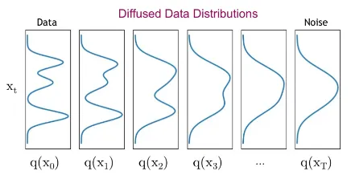

Advancements in machine learning-driven sensing and decision-making algorithms have propelled significant progress in autonomous driving systems
over recent years [69]. Significant strides have been made since the inception of the first autonomous vehicle. The initial
successful test of an automated, radio-operated vehicle occurred in the USA on August 5th, 1921 [24]. Subsequently,
in 1953, Radio Corporation of America (RCA) Laboratories achieved a breakthrough by creating a miniature vehicle navigated and controlled
via wires [70]. The advancement of Autonomous Driving experienced a significant leap forward in the 1980s, attributable
to the evolution of computer technology. In 1983, the US Defence Advanced Research Projects Agency (DARPA) initiated the Autonomous Land
Vehicle (ALV) program in collaboration with institutions like Carnegie Mellon University (CMU), Stanford University, and others
[4]. This marked the first integration of LiDAR [12], computer vision [34],
and automated control methods [35] for Autonomous Driving. By 1989, CMU had pioneered the application of neural networks
to steer Intelligent Vehicles, establishing a cornerstone for intelligent control methodologies [3].
To foster technology advancements in self-driving cars, the Defense Advanced Research Projects Agency (DARPA) orchestrated three competitions
over the last decade. The inaugural event, known as the DARPA Grand Challenge, took place in the Mojave Desert, USA, in 2004
[44]. Participants were tasked with creating self-driving cars capable of traversing a 142-mile course along desert
trails within a 10-hour timeframe. However, all vehicles competing in the challenge failed within the initial few miles. No vehicle managed
to complete the course, with the highest-scoring one covering only 7.5 miles, resulting in the prize remaining unclaimed [17].
Nevertheless, the competition proved valuable, providing a hopeful preview of what could be achieved.
Merely a day following the conclusion of the initial challenge, DARPA revealed plans for a second Grand Challenge to be held in the autumn of 2005
[8]. Building upon insights gleaned from the previous event, five vehicles, out of the 195 participating teams, triumphantly
navigated a 132-mile course in southern Nevada. The entry from Stanford University, named "Stanley" [6], clinched victory by
crossing the finish line first in 6 hours and 53 minutes, securing the \$2 million prize [7]. Their vehicle came equipped
with a camera, LiDAR, RADAR [1, 2], Global Positioning System (GPS), and an Intel CPU. The primary
technological hurdle in crafting Stanley was to engineer a supremely dependable system, capable of navigating diverse and unstructured off-road
terrains at considerable speeds, all while maintaining exceptional precision.
In a bid to set even higher standards, DARPA organized a third competition in 2007, known as the Urban Challenge [9].
This event saw driverless vehicles tackling a sophisticated course set in a simulated city environment in Victorville, California
[11]. The vehicles had to navigate through moving traffic and obstacles while adhering to traffic regulations.
Out of the 11 participating teams, six successfully completed the course. The "Tartan Racing" team, headed by Carnegie Mellon University,
secured the top position by earning the highest points based on completion time and adherence to California driving regulations,
thus claiming the \$2 million prize [10]. It integrated an array of LiDAR, RADAR, and visual sensors to navigate
urban environments securely. While this competition marked the largest and most consequential event of its kind at the time, the testing
environment fell short in replicating certain elements of real-world urban driving scenarios, such as the presence of pedestrians and
cyclists [43].
Following the DARPA Urban Challenge, numerous additional automated driving competitions [14, 18, 13, 23]
took place in various countries. The swift advancement of technology and regulations governing its implementation are propelled by the
collaboration among information technology and automotive sectors, academic and research organizations, the Defense Department and its
affiliates, as well as federal and state transportation authorities [38].
The Society of Automotive Engineers (SAE) delineates six levels of driving automation, ranging from 0 (fully manual) to 5 (fully autonomous),
which have been endorsed by the U.S. Department of Transportation [48, 81]. Researchers predict that by 2025,
approximately 8 million autonomous or semi-autonomous vehicles will be on the roads [82]. By 2030, an estimated 82 million
Intelligent Vehicles (IVs) with Level 4/Level 5 capabilities are expected to operate in the US, Europe, and China [25].
Despite the remarkable advancements in Autonomous Driving technology, significant challenges persist. One critical hurdle for their widespread
deployment in real-world settings is the evaluation of their safety. Intelligent cyber-physical systems face greater challenges in deployment
because our world is intricate and diverse, leading to significant uncertainty for the intelligent agents. Even for humans, mastering driving
skills requires several months due to the complexity of traffic scenarios [69]. Hence, Autonomous Vehicles (AV's) must undergo
extensive training and evaluation across various scenarios to showcase their safety and ability to handle diverse situations
[55, 37].
In a technical report released by the National Highway Traffic Safety Administration (NHTSA), it was revealed that 94% of road accidents stem
from human errors [21]. Given this context, Automated Driving Systems are being advanced with the potential to curb
accidents, cut emissions, assist mobility-impaired individuals, and alleviate driving-related stress [26]. Nonetheless,
achieving reliable automated driving in urban settings remains a challenge.
Achieving level four and higher driving automation in urban road networks poses an ongoing and formidable challenge. The environmental factors,
ranging from weather conditions to human behavior in the vicinity, are notably unpredictable and complex to anticipate. Moreover, system
failures have resulted in accidents: in the Hyundai competition, one of the Autonomous Driving Systems crashed due to rain [86];
Google's Autonomous Vehicle collided with a bus while changing lanes because it failed to accurately gauge the bus's speed [85];
and Tesla's Autopilot failed to detect a white truck, resulting in a fatal collision with the driver [90].
Furthermore, there have been additional occurrences of accidents involving self-driving cars. In November of last year, a pedestrian in San
Francisco was involved in a hit-and-run accident, where they were initially struck by a vehicle and thrown into an adjacent lane. Subsequently,
a Cruise robotaxi, unable to halt in time, collided with the pedestrian and dragged them. This incident compelled Cruise to recall 950
driverless cars from roads across the United States [89]. Despite outperforming its rivals, Waymo has also experienced accidents.
Earlier this year, a driverless Waymo vehicle collided with a cyclist in San Francisco, resulting in minor injuries, prompting a review by the
state's auto regulators [88]. Another incident in December 2023 involved two vehicles crashing into the same towed pickup truck in
Phoenix, Arizona, leading Waymo to initiate a voluntary recall of the software utilized in its robotaxi fleet [87].
Accidents resulting from underdeveloped systems erode public trust and, tragically, result in loss of life [28]. Safety stands
as the top consumer apprehension regarding autonomous vehicles, with 36% of Americans expressing distrust in the technology's ability to ensure
the safety of motorists and pedestrians. The prevailing sentiment among consumers regarding how autonomous vehicles will impact America's
roadways leans towards negativity. Skepticism and concern are the predominant emotions surrounding self-driving cars, with nearly half (45%)
of consumers expressing either of these feelings. Conversely, only 16% of consumers report feeling excitement, with just 8% expressing an
overall positive outlook toward these vehicles [83]. Consumer sentiment aligns with projections indicating slow growth in the
adoption of self-driving vehicles. Survey data reveals that self-driving cars are likely to remain a niche product, as 51% of consumers
indicate they are unlikely to own or use such vehicles within the next five years [84]. In contrast, only 14% believe they are
very likely to own a vehicle with self-driving capabilities. These findings underscore consumer concerns regarding the safety and reliability
of self-driving cars, suggesting that market growth in this sector is poised to be sluggish in the next five years. A significant shift in
public perception will be essential for self-driving vehicles to assert themselves as a dominant force in the U.S. auto market in the
foreseeable future [83].
Establishing public trust will require the development of more reliable and robust Autonomous Driving Systems that are less susceptible to
accidents. While current Autonomous Vehicles have achieved considerable success under normal conditions through extensive training spanning
hundreds of millions of miles, uncertainties remain regarding their safety and robustness in unique scenarios. For instance, encountering
unexpected situations such as a child suddenly darting into the driving lane to retrieve a ball poses a significant challenge for
Autonomous Vehicles, leaving them with minimal time to react. Even slight errors in response could result in serious consequences.
This underscores the critical need to conduct rigorous testing of self-driving cars' behavior in tailored safety-critical scenarios to
thoroughly assess the safety and robustness of Autonomous Vehicle Systems.
Diffusion Models
Diffusion models [22, 33, 30, 40, 46, 50, 65, 68, 80]
belong to a category of probabilistic generative models designed to reverse the gradual degradation of training data structure. The training
process involves two distinct phases: forward diffusion and backward denoising. During the forward diffusion phase, multiple steps are executed,
each involving the addition of low-level noise to input images. This noise's intensity varies with each step, progressively deteriorating the
training data until it becomes pure Gaussian noise. The backward denoising phase reverses this process by systematically removing the noise,
thereby reconstructing the original images. Consequently, during inference, images are generated by gradually reconstructing them from random
white noise. The noise subtraction at each step is estimated using a neural network, typically leveraging a U-Net [20]
architecture, enabling dimension preservation.
Diffusion models are inspired by non-equilibrium thermodynamics. They define a Markov chain of diffusion steps to slowly add random noise to
data and then learn to reverse the diffusion process to construct desired data samples from the noise. Unlike VAE or flow models,
diffusion models are learned with a fixed procedure and the latent variable has high dimensionality (same as the original data)
[54].
Figure 1. Markov chain of forward (reverse) diffusion process of generating a sample by slowly adding (removing) noise.
(Image source: Ho et al. 2020 [33] with a few additional annotations)
Denoising Diffusion Probabilistic Model (DDPM)
Forward Diffusion Process
DDPM's [22, 23] slowly corrupt the training data using Gaussian noise .
Let \(q(\mathbf{x_0})\) be the data density, where the index 0 denotes the fact that the data is uncorrupted (original). Given an
uncorrupted training sample \(\mathbf{x}_0 \sim q(\mathbf{x}_0)\), the noised versions \(\mathbf{x_1, x_2, \dots, x_T}\) are obtained
according to the following Markovian process:
$$
q(\mathbf{x}_t \vert \mathbf{x}_{t-1}) = \mathcal{N}(\mathbf{x}_t; \sqrt{1 - \beta_t} \mathbf{x}_{t-1}, \beta_t\mathbf{I}) \quad, \forall t \in \{1, 2, \dots, T\}
$$
where \(T\) is the number of diffusion steps, \(\beta_1, \dots, \beta_T \in [0, 1)\) are hyperparameters representing the variance schedule across diffusion steps, \( \mathbf{I} \) is the identity matrix having the same dimensions
as the input image \(\mathbf{x}_0\), and \(\mathcal{N}(\mathbf{x}; \mu, \sigma)\) represents the normal distribution of mean \(\mu\) and covariance \(\sigma\) that produces \(\mathbf{x}\).

Figure 2. Change in data distribution in the forward diffusion process
The primary emphasis of the forward diffusion process, which involves transitioning from the original
image distribution to an isotropic Gaussian distribution, is on the following transition function:
$$\mathbf{x}_t = \sqrt{1 - \beta}\mathbf{x}_{t - 1} + \sqrt{\beta}\mathcal{N}(0, \mathbf{I})$$
The repeated application of this transition function somehow transforms an image sampled from a highly complex distribution into a sample from a normal distribution.
It is imperative to understand how this repeated utilization of the transition function accomplishes this outcome.
$$
\begin{aligned}
\mathbf{x}_t &= \sqrt{1 - \beta}\mathbf{x}_{t - 1} + \sqrt{\beta}\mathcal{N}(0, \mathbf{I}) \\
&= \sqrt{1 - \beta}(\sqrt{1 - \beta}\mathbf{x}_{t - 2} + \sqrt{\beta}\mathcal{N}(0, \mathbf{I})) + \sqrt{\beta}\mathcal{N}(0, \mathbf{I}) \\
&= \sqrt{1 - \beta}^2\mathbf{x}_{t - 2} + \sqrt{1 - \beta}\sqrt{\beta}\mathcal{N}(0, \mathbf{I}) + \sqrt{\beta}\mathcal{N}(0, \mathbf{I}) \\
&= \sqrt{1 - \beta}^2(\sqrt{1 - \beta}\mathbf{x}_{t - 3} + \sqrt{\beta}\mathcal{N}(0, \mathbf{I})) + \sqrt{1 - \beta}\sqrt{\beta}\mathcal{N}(0, \mathbf{I}) + \sqrt{\beta}\mathcal{N}(0, \mathbf{I}) \\
&= \dots \\
&= \underbrace{\sqrt{1 - \beta}^t\mathbf{x}_0}_\text{$\sim 0$} + \dots + \underbrace{\sqrt{1 - \beta}\sqrt{1 - \beta}\sqrt{\beta}\mathcal{N}(0, \mathbf{I})}_\text{$var = \beta(1 - \beta)(1 -\beta)$} + \underbrace{\sqrt{1 - \beta}\sqrt{\beta}\mathcal{N}(0, \mathbf{I})}_\text{$var = \beta(1 - \beta)$} + \underbrace{\sqrt{\beta}\mathcal{N}(0, \mathbf{I})}_\text{$var = \beta$}
\end{aligned}
$$
For a sufficiently large \(t\) (say, 1000), the first term \(\sqrt{1 - \beta}^t \sim 0\) as \(0 < 1 - \beta < 1\). The rest of the expression is sum of a GP that can be written as:
$$\beta\frac{1 - (1 - \beta)^t}{1 - (1 - \beta)} \sim \frac{\beta}{\beta} = 1$$
$$\therefore\quad\mathbf{x}_t = 0.\mathbf{x}_0 + 1.\mathcal{N}(0, \mathbf{I})$$
This shows that the repeated use of the transition function will indeed lead to a zero mean and unit variance (isotropic) Gaussian distribution.
An important property of this recursive formulation is that it also allows the direct sampling of \(\mathbf{x}_t\), when \(t\) is drawn from a uniform
distribution, i.e., \(\forall t \sim \mathcal{U}(\{1, \dots, T\})\):
$$q(\mathbf{x}_t \vert \mathbf{x}_0) = \mathcal{N}(\mathbf{x}_t; \sqrt{\bar{\alpha}_t} \mathbf{x}_0, (1 - \bar{\alpha}_t)\mathbf{I})$$
;where \(\alpha_t = 1 - \beta_t\) and \(\bar{\alpha}_t = \prod_{i=1}^t \alpha_i\).
In essence, this equation demonstrates that we can obtain any noisy version \(\mathbf{x}_t\) through a single step, provided we have the original image \(\mathbf{x}_0\) and establish a fixed variance schedule \(\beta_t\).
By leveraging the above properties, we can generate new samples from \(q(\mathbf{x}_0)\) if we start from a sample \(\mathbf{x}_t \sim \mathcal{N}(0, \mathbf{I})\) and follow the reverse steps \(q(\mathbf{x}_{t - 1}\vert\mathbf{x}_t) = \mathcal{N}(x_{t - 1}, \mu(x_t, t), \Sigma(x_t, t))\).
The reverse process is likewise a diffusion process, featuring transitions that adhere to the same functional form. This implies that our reverse process, which effectively generates data from random noise, also follows a Markov chain with Gaussian transition probability. However, computing it directly would necessitate calculations involving the entire data distribution, which is impractical.
Instead, we resort to approximations to address this challenge. To approximate these steps, we can train a neural network, \(p_\theta(\mathbf{x}_{t - 1}\vert\mathbf{x}_t) = \mathcal{N}(x_{t - 1}, \mu_\theta(x_t, t), \Sigma_\theta(x_t, t))\) that receives as input the noisy image \(x_t\) and the embedding at time step \(t\) and learns to predict
the mean \(\mu_\theta(x_t, t)\) and the covariance \(\Sigma_\theta(x_t, t)\).
In an ideal scenario, we would train the neural network with a maximum likelihood objective such that the probability assigned by the model \(p_\theta(x_0)\) to
each training example \(x_0\) is as large as possible. However, \(p_\theta(x_0)\) is intractable because we have to marginalize over all
the possible reverse trajectories to compute it. The solution to this problem is to minimize a variational lower-bound of the negative
log-likelihood instead, which has the following formulation:
$$
\begin{aligned}
\mathcal{L}_{vlb} = -log\text{ }p_\theta(x_0\vert x_1) + \text{KL}(q(x_T\vert x_0)\Vert p(x_T)) + \sum_{t=2}^{T}\text{KL}(q(x_{t-1}\vert x_t, x_0)\Vert p_\theta(x_{t-1}\vert x_t))
\end{aligned}
$$
where \(KL\) denotes the Kullback-Leibler divergence between two probability distributions.
Instead of \(q(\mathbf{x}_{t - 1} \vert \mathbf{x}_t)\), we have an additional conditioning on \(\mathbf{x}_0\) i.e., \(q(\mathbf{x}_{t - 1} \vert \mathbf{x}_t, \mathbf{x}_0)\).
Intuitively, this is a more manageable task because once you observe the original image, you can develop an understanding of how to proceed with denoising, transitioning from one
time step to the previous one. The last term shows that the neural network is trained such that, at each time step \(t\), \(p_\theta(x_{t-1}\vert x_t)\)
is as close as possible to the true posterior of the forward process when conditioned on the original image. Moreover, the posterior \(q(\mathbf{x}_{t-1}\vert \mathbf{x}_t, \mathbf{x}_0)\) is
a Gaussian distribution which has been proven later. But before that, let us see how we arrive at \(\mathcal{L}_{vlb}\).
We can entirely disregard the second term because $q$ lacks any trainable parameters; it merely represents a forward process that continuously
introduces noise. Additionally, \(p(\mathbf{x}_T)\) comprises random noise samples from our Gaussian distribution. Moreover, based on the theory
mentioned earlier, which asserts that \(q\) will converge to a normal distribution, we can confidently anticipate that the KL divergence will
be minimal. Now, let us turn our attention to the other KL divergence term. As discussed earlier, \(p_\theta(\mathbf{x}_{t - 1}\vert\mathbf{x}_t)\)
can be expressed as \(\mathcal{N}(x_{t - 1}, \mu_\theta(x_t, t), \Sigma_\theta(x_t, t))\). Ho et al. [33]
proposes to fix the variance schedule to a constant value. Therefore, \(p_\theta(\mathbf{x}_{t - 1}\vert\mathbf{x}_t)\) becomes \(\mathcal{N}(x_{t - 1}, \mu_\theta(x_t, t), \beta\mathbf{I})\).
Now, we demonstrate that the posterior \(q(\mathbf{x}_{t-1}\vert \mathbf{x}_t, \mathbf{x}_0)\) is a Gaussian distribution, implying
closed-form expressions for the KL divergences. Using Bayes’ rule, we have:
$$
\begin{aligned}
q(\mathbf{x}_{t - 1}\vert \mathbf{x}_t, \mathbf{x}_0) &= \frac{q(\mathbf{x}_{t}\vert \mathbf{x}_{t - 1}, \mathbf{x}_0)q(\mathbf{x}_{t - 1}\vert \mathbf{x}_0)}{q(\mathbf{x}_t\vert \mathbf{x}_0)}
\end{aligned}
$$
; where \(q(\mathbf{x}_{t}\vert \mathbf{x}_{t - 1}, \mathbf{x}_0)\) is our forward process and although it is conditioned on \(\mathbf{x}_0\) it is going to have no impact because our forward process is a Markov Chain.
The other two terms can be written using the recursion that we established earlier which allows us to go from \(\mathbf{x}_0\) to a noisy image
at any time step \(t\).
$$
\begin{aligned}
\therefore q(\mathbf{x}_{t - 1}\vert \mathbf{x}_t, \mathbf{x}_0) &= \frac{\mathcal{N}(\mathbf{x}_t; \sqrt{\alpha_t}\mathbf{x}_{t - 1}, (1 - \alpha_t)\mathbf{I}).\mathcal{N}(\mathbf{x}_{t - 1}; \sqrt{\bar{\alpha}_{t - 1}}\mathbf{x}_0, (1 - \bar{\alpha}_{t - 1})\mathbf{I})}{\mathcal{N}(\mathbf{x}_t; \sqrt{\bar{\alpha}_t}\mathbf{x}_0, (1 - \bar{\alpha}_{t - 1})\mathbf{I})} \\
&\propto \exp \frac{-1}{2} \left[\frac{(\mathbf{x}_t - \sqrt{\alpha}_t\mathbf{x}_{t - 1})^2}{1 - \alpha_t} + \frac{(\mathbf{x}_{t - 1} - \sqrt{\bar{\alpha}_{t - 1}}\mathbf{x}_0)^2}{1 - \bar{\alpha}_{t - 1}} + \frac{(\textbf{x}_t - \sqrt{\bar{\alpha}_t}\mathbf{x}_0)^2}{1 - \bar{\alpha_t}}\right] \\
&\propto \exp \frac{-1}{2} \left[\mathbf{x}^2_{t - 1}(\frac{\alpha_t}{1 - \alpha_t} + \frac{1}{1 - \bar{\alpha}_{t - 1}}) - 2\mathbf{x}_{t - 1}(\frac{\sqrt{\alpha}_t\mathbf{x}_t}{1 - \alpha_t} + \frac{\sqrt{\bar{\alpha}_{t - 1}}\mathbf{x}_0}{1 - \bar{\alpha}_{t - 1}}) + C(\mathbf{x}_t, \mathbf{x}_0)\right] \\
&\quad\text{;where } C(\mathbf{x}_t, \mathbf{x}_0) \text{ is some function not involving } \mathbf{x}_{t - 1}. \\
\implies q(\mathbf{x}_{t - 1}\vert \mathbf{x}_t, \mathbf{x}_0)&\propto \exp \frac{-1}{2} \biggl[\mathbf{x}^2_{t - 1}(\frac{\alpha_t - \bar{\alpha}_t + 1 - \alpha_t}{(1 - \alpha_t)(1 - \bar{\alpha}_{t - 1})}) - 2\mathbf{x}_{t - 1}(\frac{(1 - \bar{\alpha}_{t - 1})\sqrt{\alpha}_t\mathbf{x}_t + (1 - \alpha_t)\sqrt{\bar{\alpha}_{t - 1}}\mathbf{x}_0}{(1 - \alpha_t)(1 - \bar{\alpha}_{t - 1})}) \\
&\quad\quad\quad+ C(\mathbf{x}_t, \mathbf{x}_0)\biggr] \\
&\propto \exp \frac{-1}{2} \biggl[\mathbf{x}^2_{t - 1}(\frac{1 - \bar{\alpha}_t}{(1 - \alpha_t)(1 - \bar{\alpha}_{t - 1})}) - 2\mathbf{x}_{t - 1}(\frac{(1 - \bar{\alpha}_{t - 1})\sqrt{\alpha}_t\mathbf{x}_t + (1 - \alpha_t)\sqrt{\bar{\alpha}_{t - 1}}\mathbf{x}_0}{(1 - \alpha_t)(1 - \bar{\alpha}_{t - 1})}) \\
&\quad\quad\quad+ C(\mathbf{x}_t, \mathbf{x}_0)\biggr] \\
\implies q(\mathbf{x}_{t - 1}\vert \mathbf{x}_t, \mathbf{x}_0)&\propto \exp \frac{-1}{2}\Biggl[\frac{1 - \bar{\alpha}_t}{(1 - \alpha_t)(1 - \bar{\alpha}_{t - 1})}\biggl\{\mathbf{x}^2_{t - 1} - 2\mathbf{x}_{t - 1}(\frac{(1 - \bar{\alpha}_{t - 1})\sqrt{\alpha}_t\mathbf{x}_t + (1 - \alpha_t)\sqrt{\bar{\alpha}_{t - 1}}\mathbf{x}_0}{(1 - \bar{\alpha}_t)}) \\
&\quad\quad\quad+ \frac{(1 - \alpha_t)(1 - \bar{\alpha}_{t - 1})}{1 - \bar{\alpha}_t}C(\mathbf{x}_t, \mathbf{x}_0)\biggr\} \Biggr]
\end{aligned}
$$
Earlier we had derived that,
$$
\begin{aligned}
\mathbf{x}_t &= \sqrt{\bar{\alpha}_t}\textbf{x}_0 + \sqrt{1 - \bar{\alpha}_t}\epsilon \\
\implies \mathbf{x}_0 &= \frac{1}{\sqrt{\bar{\alpha}_t}}(\mathbf{x}_t - \sqrt{1 - \bar{\alpha}_t}\epsilon)
\end{aligned}
$$
By replacing \(\mathbf{x}_0\) with \(\frac{1}{\sqrt{\bar{\alpha}_t}}(\mathbf{x}_t - \sqrt{1 - \bar{\alpha}_t}\epsilon)\) in \(\tilde{\mu}_t(\mathbf{x}_t, \mathbf{x}_0)\), we can simplify it as,
$$
\begin{aligned}
\tilde{\mu}_t(\mathbf{x}_t, \mathbf{x}_0) &= \frac{\sqrt{\alpha_t}(1 - \bar{\alpha}_{t - 1})}{1 - \bar{\alpha}_t}\mathbf{x}_t + \frac{(1 - \alpha_t)\sqrt{\bar{\alpha}_{t - 1}}}{1 - \bar{\alpha_t}}\mathbf{x}_0 \\
&= \frac{\sqrt{\alpha_t}(1 - \bar{\alpha}_{t - 1})}{1 - \bar{\alpha}_t}\mathbf{x}_t + \frac{(1 - \alpha_t)\sqrt{\bar{\alpha}_{t - 1}}}{1 - \bar{\alpha_t}} \bigg(\frac{1}{\sqrt{\bar{\alpha}_t}}(\mathbf{x}_t - \sqrt{1 - \bar{\alpha}_t}\epsilon)\bigg)\\
&= \frac{\sqrt{\alpha_t}(1 - \bar{\alpha}_{t - 1})}{1 - \bar{\alpha}_t}\mathbf{x}_t + \frac{(1 - \alpha_t)}{(1 - \bar{\alpha}_t)\sqrt{\alpha_t}}\mathbf{x}_t - \frac{(1 - \alpha_t)\sqrt{(1 - \bar{\alpha}_t)}}{(1 - \bar{\alpha}_t)\sqrt{\alpha_t}}\epsilon \\
&= \bigg(\frac{\sqrt{\alpha_t}(1 - \bar{\alpha}_{t - 1})}{1 - \bar{\alpha}_t} + \frac{(1 - \alpha_t)}{(1 - \bar{\alpha}_t)\sqrt{\alpha_t}}\bigg)\mathbf{x}_t - \frac{(1 - \alpha_t)\sqrt{(1 - \bar{\alpha}_t)}}{(1 - \bar{\alpha}_t)\sqrt{\alpha_t}}\epsilon \\
&= \bigg(\frac{\alpha_t(1 - \bar{\alpha}_{t - 1})}{(1 - \bar{\alpha}_t)\sqrt{\alpha_t}} + \frac{(1 - \alpha_t)}{(1 - \bar{\alpha}_t)\sqrt{\alpha_t}}\bigg)\mathbf{x}_t - \frac{(1 - \alpha_t)\sqrt{(1 - \bar{\alpha}_t)}}{(1 - \bar{\alpha}_t)\sqrt{\alpha_t}}\epsilon \\
&= \frac{\alpha_t - \bar{\alpha}_t + 1 - \alpha_t}{(1 - \bar{\alpha}_t)\sqrt{\alpha_t}}\mathbf{x}_t - \frac{(1 - \alpha_t)\sqrt{(1 - \bar{\alpha}_t)}}{(1 - \bar{\alpha}_t)\sqrt{\alpha_t}}\epsilon \\
&= \frac{1 - \bar{\alpha}_t}{(1 - \bar{\alpha}_t)\sqrt{\alpha_t}}\mathbf{x}_t - \frac{1 - \alpha_t}{\sqrt{(1 - \bar{\alpha}_t)}\sqrt{\alpha_t}}\epsilon \\
&= \frac{1}{\sqrt{\alpha_t}}\mathbf{x}_t - \frac{1 - \alpha_t}{\sqrt{(1 - \bar{\alpha}_t)}\sqrt{\alpha_t}}\epsilon \\
&= \frac{1}{\sqrt{\alpha_t}}\mathbf{x}_t - \frac{\beta_t}{\sqrt{(1 - \bar{\alpha}_t)}\sqrt{\alpha_t}}\epsilon \quad\quad\quad\bigg[\because \alpha_t = 1 - \beta_t\bigg]\\
&= \frac{1}{\sqrt{\alpha_t}}\bigg(\mathbf{x}_t - \frac{\beta_t}{\sqrt{(1 - \bar{\alpha}_t)}}\epsilon \bigg)
\end{aligned}
$$
This shows that we are only subtracting random scaled noise from \(\mathbf{x}_t\). The authors decided to use a simple
Mean Squared Error between \(\tilde{\mu}_t\) and \({\mu}_\theta\) that can be written as,
$$
\begin{aligned}
L_t &= \frac{1}{2\sigma^2_t}\Vert\tilde{\mu}_t(\mathbf{x}_t, \mathbf{x}_0) - {\mu}_\theta(\mathbf{x}_t, t))\Vert^2 \\
&= \frac{1}{2\sigma^2_t}\bigg\Vert\frac{1}{\sqrt{\alpha_t}}\bigg(\mathbf{x}_t - \frac{\beta_t}{\sqrt{(1 - \bar{\alpha}_t)}}\epsilon \bigg) - \frac{1}{\sqrt{\alpha_t}}\bigg(\mathbf{x}_t - \frac{\beta_t}{\sqrt{(1 - \bar{\alpha}_t)}}\epsilon_\theta(\mathbf{x}_t, t) \bigg) \bigg\Vert^2 \\
&= \frac{1}{2\sigma^2_t}\bigg\Vert \frac{\mathbf{x}_t}{\sqrt{\alpha}_t} - \frac{\beta_t}{\sqrt{\alpha}_t\sqrt{(1 - \bar{\alpha}_t)}}\epsilon - \frac{\mathbf{x}_t}{\sqrt{\alpha}_t} - \frac{\beta_t}{\sqrt{\alpha}_t\sqrt{(1 - \bar{\alpha}_t)}}\epsilon_\theta(\mathbf{x}_t, t) \bigg\Vert^2 \\
&= \frac{\beta^2_t}{2\sigma^2_t{\alpha}_t{(1 - \bar{\alpha}_t)}}\Vert\epsilon - \epsilon_\theta(\mathbf{x}_t, t)\Vert^2 \\
\end{aligned}
$$
This shows that the generative process is still defined by \(p_\theta(\mathbf{x}_{t - 1}|\mathbf{x}_t)\), but the neural network does
not predict the mean and the variance directly. Instead, it is trained to predict the noise from the image.
According to Ho et al. [33], the diffusion model works better when we remove the scaling term \(\frac{\beta^2_t}{2\sigma^2_t{\alpha}_t{(1 - \bar{\alpha}_t)}}\).
Hence we can rewrite the training loss term \(L_t\) as,
$$
\begin{aligned}
L_t &= \Vert\epsilon - \epsilon_\theta(\mathbf{x}_t, t)\Vert^2
\end{aligned}
$$
Text-to-Image Generation Using Diffusion Models
Vision-language models have garnered significant attention lately due to their numerous potential applications [51].
Text-to-image generation involves creating an image based on descriptive text [58]. Blended diffusion [56]
combines pre-trained DDPM [33] and CLIP [51] models to propose a solution for region-based image
editing, offering natural language guidance and versatility across various image types. Conversely, unCLIP
(DALL-E 2) [63] introduces a two-stage approach: a prior model generating a CLIP-based image embedding
conditioned on a text caption, and a diffusion-based decoder producing an image based on the image embedding.
Imagen [66] presents a text-to-image diffusion model along with a comprehensive benchmark for performance assessment.
It is shown to demonstrate competitive performance compared to existing methods like VQ-GAN+CLIP [57],
Latent Diffusion Models [62], and DALL-E 2 [63]. Inspired by the ability of guided
diffusion models [46, 60] to generate photo-realistic samples and the ability of
text-to-image models to handle free-form prompts, GLIDE [49] applies guided diffusion to the application of
text-conditioned image synthesis. VQ-Diffusion [59] introduces a vector-quantized diffusion model tailored for
text-to-image generation, addressing unidirectional bias and preventing accumulative prediction error. Versatile Diffusion [79]
proposes the first unified multi-flow multimodal diffusion framework, which supports image-to-text, image-variation, text-to-image and
text-variation. It can be further extended to other applications such as semantic-style disentanglement, image-text dual-guided generation,
latent image-to-text-to-image editing and more. A promising new direction in diffusion model research involves utilizing pre-trained
text-to-image diffusion models for more complex or fine-grained control of synthesis results. DreamBooth [76]
introduces the first technique addressing the challenging task of subject-driven generation. This approach allows users to recontextualize
subjects, modify their properties and original art renditions based on just a few casually captured images of the subject.
Text-to-Video Generation Using Diffusion Models
Significant advancements in text-to-image diffusion-based generation have spurred interest in the development of text-to-video generation.
Make-A-Video [67] proposes an extension of diffusion-based text-to-image models to text-to-video through a spatio-temporally
factorized diffusion model. By leveraging joint text-image priors, the need for paired text-video data is circumvented, with additional
super-resolution strategies presented for high-definition, high frame-rate text-to-video generation. Imagen Video [61]
achieves high-definition video generation by employing cascaded video diffusion models and adapting successful strategies from
text-to-image settings, such as using a frozen T5 text encoder [36] and eliminating the need for classifiers.
Tune-A-Video [77] introduces one-shot video tuning for text-to-video generation, removing the requirement for extensive
training with large-scale video datasets. It utilizes efficient attention tuning and structural inversion to enhance temporal
consistency significantly. Text2Video-Zero [73] accomplishes zero-shot text-to-video synthesis
utilizing a pre-trained text-to-image diffusion model, ensuring temporal consistency through motion dynamics in latent codes
and cross-frame attention. Its aim is to enable cost-effective text-guided video generation and editing without additional
fine-tuning. FateZero [75] introduces the first framework for temporal-consistent zero-shot text-to-video editing
using a pre-trained text-to-image diffusion model. It merges attention maps in the DDIM [39] inversion and
generation processes to preserve motion and structure consistency optimally during editing.
Scenario Generation
\textbf{Deep Learning Models:} In [53] and [41], deep learning models are integrated into the
generation process. Reference [53] utilizes a Long Short-Term Memory (LSTM) [5] module to
generate the trajectory of surrounding vehicles and pedestrians by inputting the current state of the Autonomous Vehicle (AV) and a
high-definition map. The model is trained with normal traffic data to produce naturalistic scenarios. On the other hand, [41]
proposes a sophisticated system for scenario generation in a simulator. This system employs a Convolutional Neural Network
(CNN) [19] as a selector to generate agents surrounding the AV. In TrafficSim [52],
both Gated Recurrent Unit (GRU) and CNN are utilized to learn the behaviors of multi-agents from real-world data, enabling the
generation of realistic multi-agent traffic scenarios.
\textbf{Deep Generative Models:} In [71], an auto-encoder structure is employed to independently
generate vehicle initial positions and trajectories. Leveraging the capabilities of VAE [15], [27]
learns a latent space of encounter trajectories and generates novel scenarios by sampling from this space. However, due to limited
understanding of the latent code, the generation process lacks control.
In [31], the authors introduce CMTS, which combines normal and collision trajectories to generate safety-critical
scenarios through interpolation in the latent space. Meanwhile, [47] utilizes GANs and recurrent models
to produce realistic highway lane change scenarios, leveraging real-world data in the discriminator to enhance generator performance.
One of the advantages of Deep Generative Models lies in their ability to learn a low-dimensional latent space from high-dimensional
and structured data using neural networks, facilitating the generation of complex sensing scenarios. SurfelGAN, proposed
in [42], directly generates point cloud data representing scenarios from the AV's perspective.
Reference [45] augments collected driving videos by adding new vehicles to generate realistic video scenarios,
incorporating motion planning considerations. Moreover, [32] employs a GAN [16]
framework to generate traffic videos with multi-object scene synthesis, integrating physical conditions to enhance realism.
Finally, [29] designs a data-driven scenario simulator to generate both LiDAR and trajectory data, enhancing the
diversity of driving scenarios.
Efforts have recently been dedicated to generating driving scenarios using diffusion models. Scenario Diffusion [74] is
inspired by the understanding that the instantaneous position of each agent is closely tied to their behaviors. It integrates
latent diffusion [65], object detection, and trajectory regression to produce oriented bounding boxes and trajectories
simultaneously, offering a model of both the static placement of agents and their behaviors. Evaluation of Scenario Diffusion
involves generating driving scenarios based solely on map data, as well as with additional conditioning tokens. Furthermore, an analysis
of the model's generalization capabilities across different geographical regions demonstrates its ability to capture diverse traffic patterns
effectively. The Scenario Diffusion model has two components. The first is an autoencoder, which projects complex driving scenarios into a
more manageable representational space. The second component is the diffusion model. Like all diffusion models, Scenario Diffusion is trained
by adding noise to real-world scenarios and asking the model to remove this noise. Once the model is trained, random noise is sampled and
the model is used to gradually convert this noise into a realistic driving scenario.
DiffScene [78], a diffusion-enabled generation framework, is able to generate safety-critical scenarios effectively
while preserving its realism, satisfying real-world physical constraints. It is used to further evaluate and improve the safety and
robustness of various AV algorithms. It leverages diffusion model to capture the low-density spaces in the distribution to generate
realistic safety-critical scenarios efficiently. Then, a guided adversarial optimization process is employed to modify the generation
results. During each diffusion step, the generated scenarios are constrained and optimized using 3 different
objectives: \emph{safety-based objective, functionality-based objective, and constraint-based objective}. Most existing methods,
like RELATE [32] and STRIVE [64] focus on only modeling the existing data distribution
or applying scenario-specific rules. They fail to generate controllable rare events such as safety-critical scenarios efficiently.
DiffScene tries to solve these challenges.
Guo et al. [72] present an innovative data-driven approach that employs stable diffusion model to address
the task of safety-critical driving scenario generation. This work introduces a transformer encoder and region-guided cross attention
used to provide coordinate guidance with the pre-trained diffusion model while best preserving its original generation ability.
Moreover, a mask-aware adapter is also proposed which is specialized for dealing with mask condition to reduce edge artifacts.
This mask-aware adapter is composed of a parameterized downsampling network and a feature pyramid network.